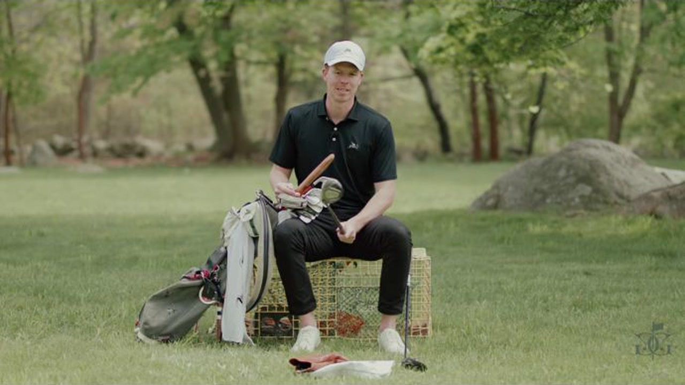
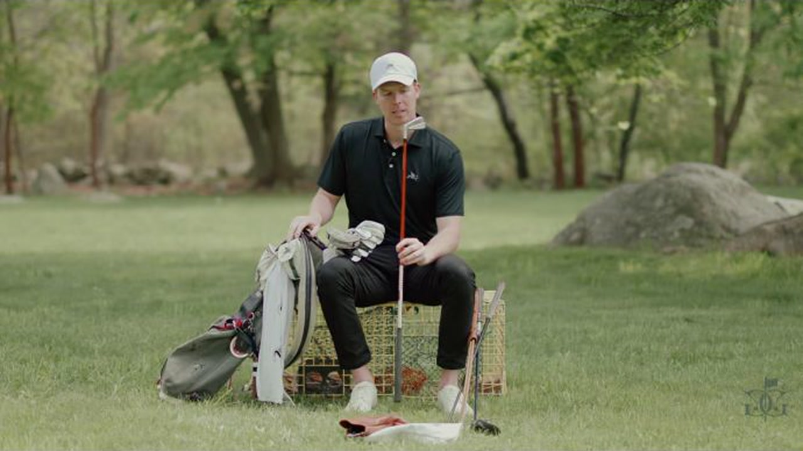
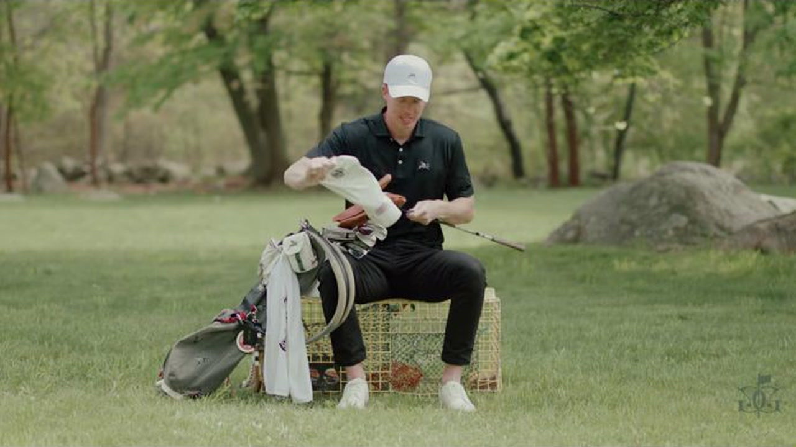

Executive summary
A golf bag is a portfolio of trusted jobs
This is not a bag assembled around one model generation. The driver is a Titleist TSi3 he is considering replacing. The 910 Fd 3-wood has survived since high school or college. A T200 2-iron remains despite being inconsistent. The irons mix forgiveness and feel, while the wedge system uses simple four-degree gaps.
The recurring principle is trust. He keeps equipment that produces a recognizable shot, even when it is old, imperfect, or due for replacement. He is candid about the weak spots: the driver feels stagnant, the 2-iron runs hot and cold, the wedges are worn, and the mallet putter behaves differently on slow and fast greens.
Distance boundary. The video does not state stock carry distances or a yardage chart for any club. This article therefore records each club's stated role, loft, model, and on-course use without inventing yardages. A real distance map would require launch-monitor or on-course gapping data.
Complete bag map
All 14 clubs and what each slot is doing
| Slot | Model | Configuration | Role and evidence | Time |
|---|---|---|---|---|
| Driver | Titleist TSi3 | 10° · Mitsubishi Diamana TB-Series 60 X-Stiff | Primary distance club. He has played it for years but says it now feels stagnant and is considering a change. | 2:56 |
| 3-wood | Titleist 910 Fd | Fairway Driver head; shaft not stated | Reliable fallback when the driver is not working. Sized between a mini driver and a conventional 3-wood; used from tee or fairway. | 3:27 |
| 2-iron | Titleist T200 | Shaft not stated | Utility option, but the least trusted full-swing club in the setup. He describes it as hot and cold. | 4:12 |
| 4–8 irons | Titleist T100 | Dynamic Gold X100; exact variant is unclear in the captions | The more forgiving end of the combo set. The video description explicitly lists T100 from 4-iron through 8-iron. | 4:31 |
| 9-iron–PW | Titleist 620 MB | Blade heads | The feel-first scoring end of the set. He praises their look and impact feel, while admitting the design is demanding away from the center. | 4:33 |
| Gap wedge | Titleist Vokey SM8 Slate | 52° · F grind · Project X LZ | Fuller, square-faced gap-wedge role. The F grind distinguishes it from the higher-loft wedges. | 5:20 |
| Sand wedge | Titleist Vokey SM8 Slate | 56° · D grind · Project X LZ | Middle short-game loft with the same high-bounce D-grind family as the lob wedge. | 5:20 |
| Lob wedge | Titleist Vokey SM8 Slate | 60° · D grind · Project X LZ | Highest-flight and shortest-shot option. The three-wedge sequence keeps loft spacing simple at four degrees. | 5:20 |
| Putter | Scotty Cameron mallet | Two 15 g weights, according to the spoken description | Excellent for him on slow greens, less comfortable on fast greens, where he says he changes to a blade. | 6:02 |
The count is exact: 1 driver + 1 three-wood + 1 utility iron + 7 set irons + 3 wedges + 1 putter = 14 clubs.
The top of the bag
Three clubs cover three different kinds of confidence
Driver: maximum upside
The TSi3 remains the first option, but familiarity has started to feel like stagnation. The planned fitting is not framed as chasing a launch cycle; it is an attempt to verify whether the current head and shaft still fit.
3-wood: dependable fallback
The 910 Fd is old but trusted. Its slightly larger fairway-driver shape makes it a credible tee substitute while remaining usable from the turf.
2-iron: situational utility
The T200 occupies the narrowest role. On good days it stays in the rotation; on bad days it never earns full confidence. That honesty is more useful than pretending every slot is equally settled.
The unresolved gap
No 5-wood, 7-wood, or hybrid appears. The bag relies on the 3-wood and 2-iron to bridge driver into the 4-iron, so actual carry gaps matter more here than the model names.

The combo iron set
Forgiveness first, feel where precision matters most
The T100/620 MB split is the most coherent part of the bag. T100 heads cover 4-iron through 8-iron, where strike quality and launch become harder to maintain. The 620 MB blades take over at 9-iron and pitching wedge, where shorter shafts and higher loft make center contact more manageable.
His explanation is emotional as well as technical: the blades look and feel so good that he wants to use more of them, even while acknowledging the distance penalty of a toe strike. That tension is the right lesson. Equipment must inspire confidence at address, but the bag still has to survive ordinary misses.

Wedges and putter
The simple end of the bag still contains two open questions
The wedge lofts are clean: 52°, 56°, and 60°. The 52° uses an F grind; the 56° and 60° use D grinds. All three are Vokey SM8 Slate with Project X LZ shafts. After three or four years, he believes the grooves are due for replacement and is considering raw-face SM10s, while joking that the older SM9s may be similar enough.
The putter is more conditional. The Scotty Cameron mallet has been in the bag for two years and has been part of two team wins, but he trusts it most on slow greens. On fast greens he moves to a blade. That is a performance clue: the issue may be pace control, total head weight, or simply visual comfort, but the video does not isolate which one.
Everything around the clubs
The carry system is intentionally minimal
- Bag: handmade 7-inch one-pocket Mackenzie canvas bag in charcoal gray with a Flyers logo.
- Organization: one pouch for game balls and tees; another for phone, wallet, keys, divot tools, and ball markers.
- Security: an AirTag is sewn into the canvas bag rather than left loose in a pocket.
- Ball: Titleist Pro V1, listed in the video description.
- Rangefinder: Amazon Red Tiger; he is openly dissatisfied with its current behavior.
- Glove: North Coast Golf Company, selected for fit and durability; the recommendation is stated as unsponsored.
- Training aid: Bubble Whip alignment sticks with a Dormie Flyers cover.
What is still missing
The next useful video would be a gapping session
Model names cannot confirm that the set has clean carry intervals. The critical transitions are 3-wood to 2-iron, 2-iron to 4-iron, pitching wedge to 52°, and mallet to blade across green speeds. A practical audit would record median carry, left-right dispersion, peak height, and the worst usable strike for each club.
- Hit at least eight representative shots per club and remove obvious mishits only by a declared rule.
- Record median carry rather than the longest shot.
- Flag gaps below roughly one useful club or large enough to force partial swings.
- Test the 3-wood and 2-iron both from a tee and the turf; their roles overlap only if both lies work.
- Compare the mallet and blade on identical short, medium, and long putts rather than by green-speed memory alone.
My take
The setup is coherent because its compromises are visible
The bag is not optimized in the sterile sense. Some grooves are old, the driver may no longer fit, the utility iron is unreliable, and the putter changes with conditions. But every uncertainty is named. That makes the setup easier to improve than a bag where every purchase is defended as perfect.
The strongest decision is the combo iron set. It spends forgiveness where the swing is least forgiving and preserves blade feel where contact is easier to control. The biggest unanswered question is the top-end spacing. Without measured carry data, no one can know whether the 3-wood, 2-iron, and 4-iron form three distinct tools or merely three labels.

Sources and method
What this article is based on
- GolfandGrass · You don't need every club… just the right ones (WITB 2025). Primary source for the spoken setup, preferences, and timestamps.
- The video's own description. Used to resolve the exact T100 4–8 / 620 MB 9–PW split, Pro V1 ball, driver shaft, and Scotty Cameron putter brand.
Method: public English captions were extracted into 200 timestamped rows and checked against the video's description and visible equipment. The three in-article frames are direct 1280×720 captures from the source video; the hero is the video's 1280×720 source thumbnail. Where the captions or description do not provide a specification or distance, the article says so rather than inferring it.